Ambientes usados por turmas de informática, programação, dados, desenvolvimento web e outras atividades realizadas em computador.
Ambientes de estudo
Conheça onde você vai estudar.
Veja ambientes utilizados nas atividades dos cursos. Na ficha de cada turma, consulte o campo Ambiente para saber a sala ou laboratório indicado na oferta.
Importante:As fotos ajudam o candidato a reconhecer os tipos de ambientes da unidade. A sala ou laboratório específico e sua organização podem variar conforme a turma e a programação acadêmica.
12laboratórios de informática
10salas de aula
3laboratórios de elétrica
ESD · automação · makerambientes para atividades específicas
Ambientes indicados para cursos de idiomas, atendimento, inclusão, qualidade e outras formações previstas na oferta.
Ambientes usados em atividades práticas relacionadas à área elétrica, automação e tecnologias aplicadas, conforme a programação de cada curso.
Ambientes e recursos associados a atividades de controle de descarga eletrostática e componentes eletrônicos.
Espaço utilizado em atividades de prototipagem, montagem e projetos quando previsto na proposta do curso.
A unidade também possui biblioteca, refeitório e setores de atendimento ao estudante.
Referência visual
Fotos dos ambientes de estudo.
Imagens reais da unidade, apresentadas para orientar o candidato sobre os espaços relacionados às atividades dos cursos.
Laboratórios de Informática
Exemplos de ambientes usados em cursos e atividades realizadas em computador.
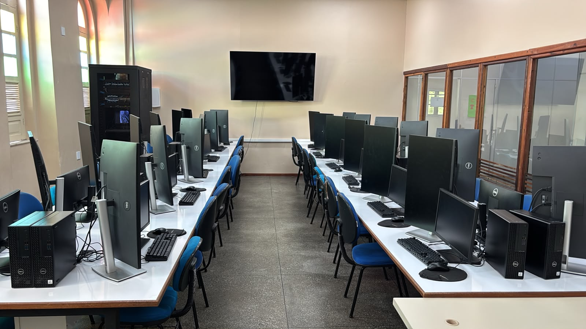
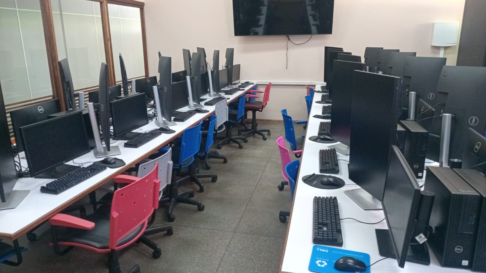
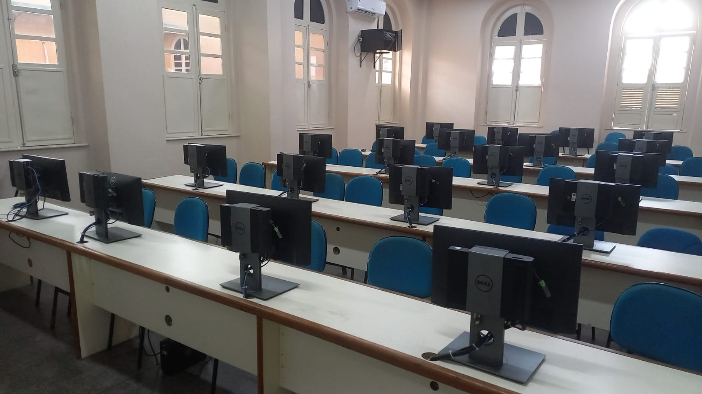
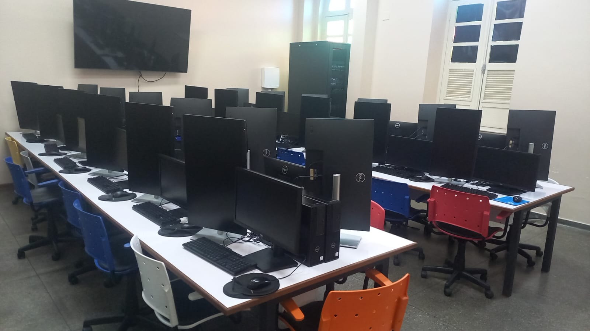
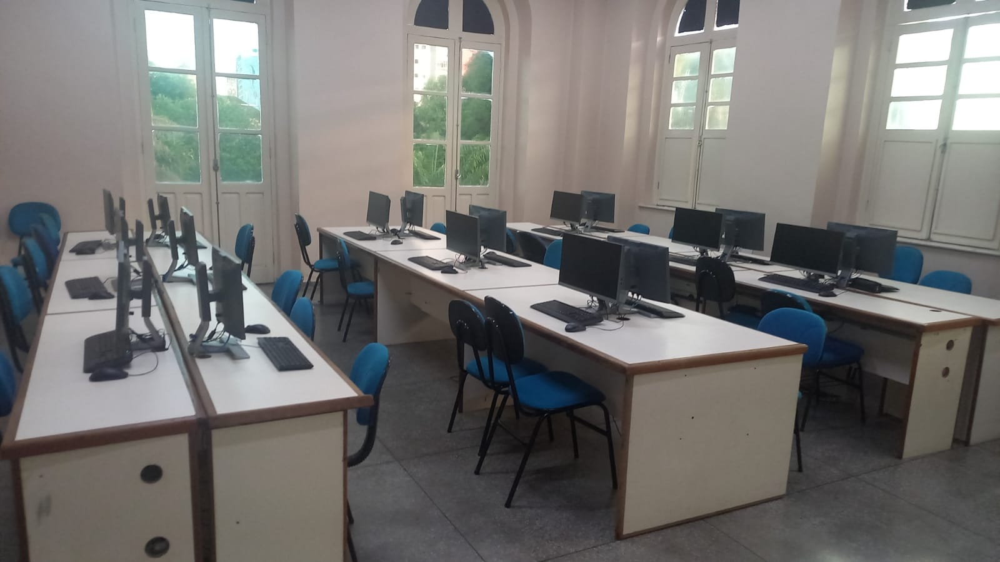
Ambientes de Elétrica
Referências de espaços usados em atividades técnicas da área elétrica.
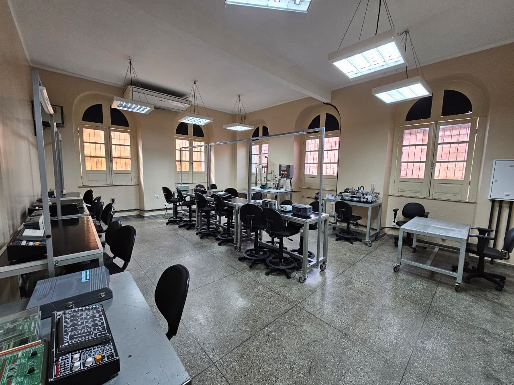
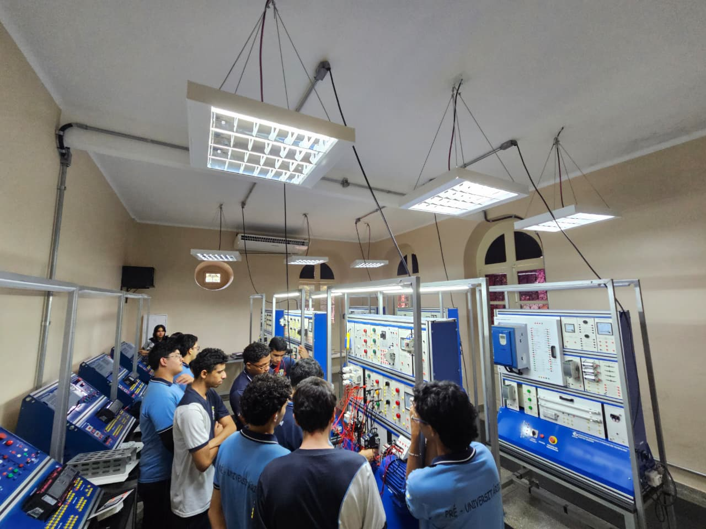
Automação
Ambiente relacionado a práticas de automação e tecnologias aplicadas.
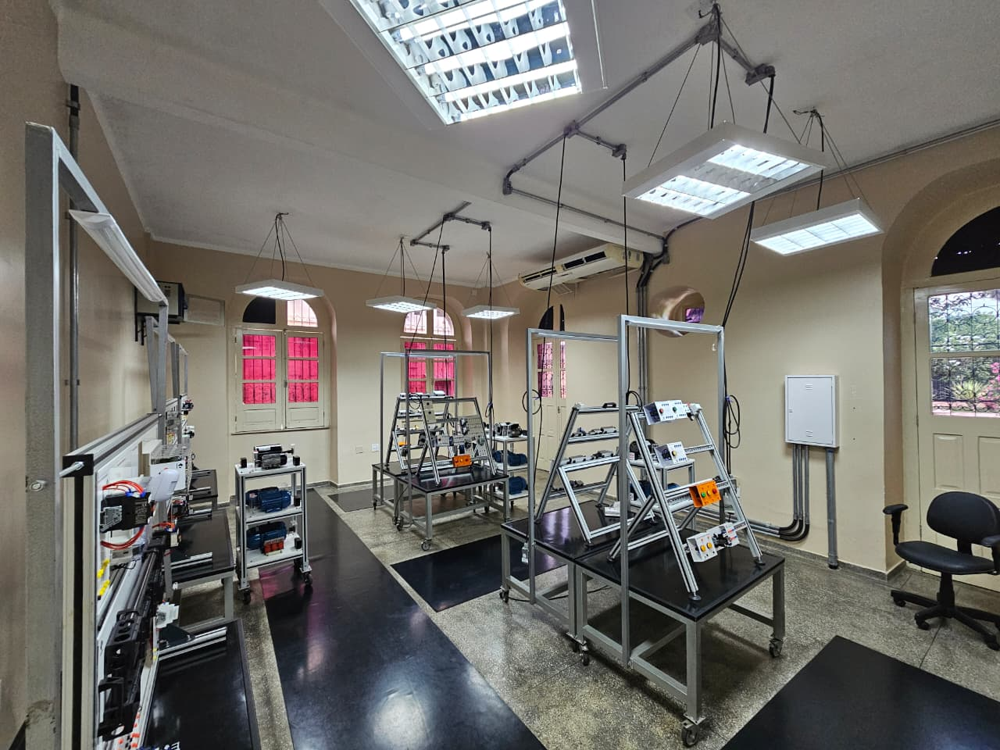
Sala Maker
Espaço usado em atividades de prototipagem e projetos quando previsto.
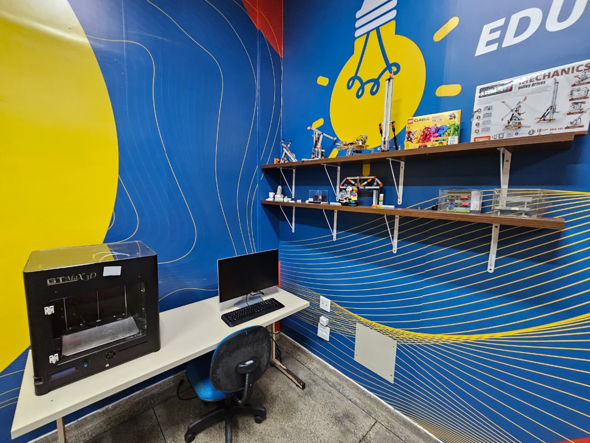
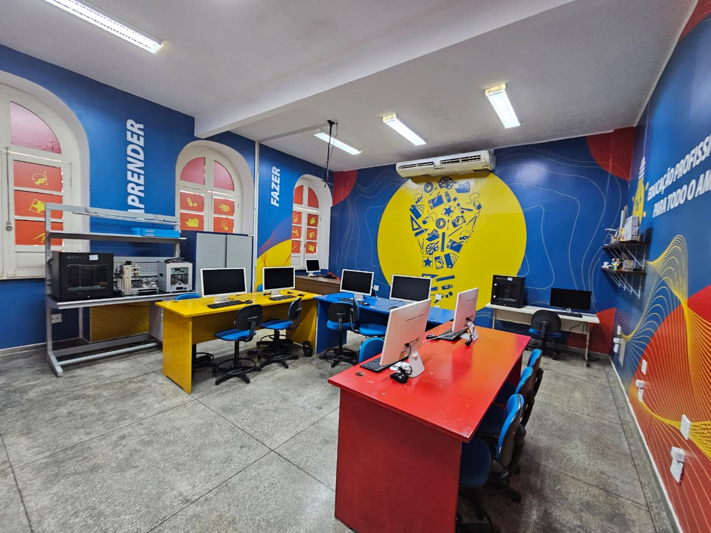
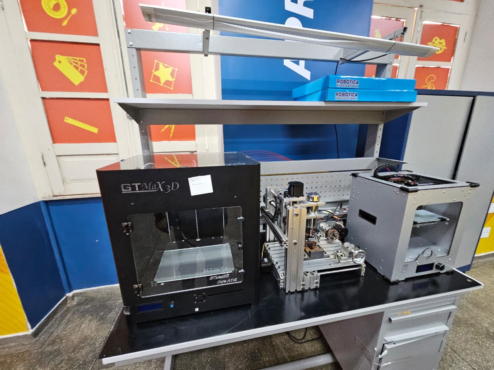
Sua turma
Confira o ambiente indicado antes do primeiro dia.
Volte ao IBC 360, abra a ficha da sua turma e consulte o campo “Ambiente”. Para regras e informações oficiais do processo, consulte o edital.